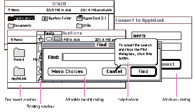
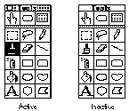

These days having floating windows in an application is like having an air bag in a car;
you're not cool if you don't have at least one. Because system software doesn't support
floating windows in the Window Manager, myriad floating window implementations
abound, ranging from the straightforward to the twisted. This article presents a
library of routines providing standard, predictable floating window behavior that most
applications can readily use.
Floating windows are windows that stay in front of document windows and provide the
user easy access to an application's tools and controls. Ever since the introduction of
HyperCard, most Macintosh programmers have been in love with floating palettes and
frequently use them. This would be fine if there were an official way to implement
floating windows, but there is no such beast. This article offers a solution.
Currently, the most popular way of implementing floating windows is to patch various
Window Manager routines so that they behave correctly when floating windows are
present. But patching traps has always been problematical. Patches often make
assumptions about how a particular routine behaves or when it will be called. If
system software or a third-party extension suddenly uses the patched routine where it
has never been used before, compatibility problems can arise. Often, patches subtly
alter the behavior of a routine -- for example, by using a register or setting a
condition code. This makes it difficult for Apple to extend (or even fix!) the
Macintosh API and still maintain a high level of compatibility with existing
applications.
You can just as easily implement floating windows by avoiding the use of high-level
Window Manager routines that generate activate events; instead, you can use
lower-level routines almost exclusively. It's much less likely that the code will break
(or cause other code to break) when Apple makes changes to the system software. The
reason for this is simple: it's much less likely for system software engineers to change
the fundamental behavior of a Macintosh Toolbox routine than it is for them to use that
routine in some new and different way. Under this second implementation method, the
application becomes a proper client of the Toolbox, using the routines that are
available rather than trying to reengineer them. The floating windows library
described in this article and provided on this issue's CD follows this philosophy.

Figure 1 Order of Windows on a Screen
Developers implementing floating windows should follow certain rules to ensure the
"consistent user experience" that we're always harping about. Don't worry if there
seem to be a lot of things to keep in mind; the routines in the library do most of the
hard work for you.
ORDER OF ON-SCREEN INTERFACE OBJECTS
As more and more things appear on users' screens, it becomes very important to define
a front-to- back order in which interface objects appear. This alleviates confusion and
prevents the neophyte user from being scared away when things start flying thick and
fast on the screen. Within an application, the order of windows and other on-screen
objects from back to front should be as follows (see Figure 1):
If you thought that floating windows would be as far back as they are, you get a gold
star. The rationale for putting modal dialogs in front of floating windows stems from
the normal use of these windows: floating windows are most frequently used as tool
palettes. The user picks a tool, color, or something similar from the palette and then
performs an operation on the active document. When a modal dialog appears, the
application needs more information from the user before it can proceed. The tools in
the floating window should not be available because they can't be used in the dialog.
Incidentally, system windows are windows that can appear in an application's window
list but aren't directly created by the application. These windows appear in front of all
windows created by the application. Examples of system windows include notification
dialogs, the PPC Browser, and input method windows.
APPEARANCE OF FLOATING WINDOWS
The physical appearance of the HyperCard floating palette has become the de facto
standard look for floating windows. The description of floating windows that follows is
based on this look. There's at least one popular program that uses the standard
document window as a floating window. Don't do this; it only confuses the novice user.
Unlike document windows, floating windows are all peers of each other. That is, there's
no visual cue to the user of any front-to-back order unless the floating windows
actually overlap each other; they all float at the same level. Because of this equality,
the title bars of floating windows are almost always in an active state. The exception to
this rule occurs when a modal window is presented to the user; since this type of
window appears above floating windows on the screen, the background of the title bar
of each visible floating window turns from its dotted pattern to white to indicate an
inactive state (see Figure 2).
A floating window can have a close box, a zoom box, and a title. The use of size boxes in
floating windows is not recommended. The title bar of a floating window should be 11
pixels high or 2 pixels higher than the minimum height of the primary script's
application font, whichever is greater. The title of a floating window should be in the
application font, bold, and its size should be the greater of 9 points and the smallest
recommended point size for that script system. Floating windows should have a
1-pixel drop shadow that starts 2 pixels from the left and top of the window.

Figure 2 Active and Inactive States of a Floating Window
FLOATING WINDOWS AND CONTEXT SWITCHING
Because floating windows are almost always in an active state, it would be very
confusing to the user if floating windows were still visible when an application is
placed in the background. (Imagine an active window lurking behind an inactive
document window.) For this reason, when an application receives a suspend event it
should hide any visible floating windows. Conversely, when the application receives a
subsequent resume event, the floating windows that were hidden on the suspend event
should be revealed.
Now that we've taken care of the formalities, we can get to the heart of the matter. This
section explains the methodology used in creating the floating windows library
routines included on this issue's CD. (You can use these routines, or you can write
your own using the same methodology.) First, we talk about handling activate events,
which is the trickiest aspect of implementing floating windows. Then, we describe the
API in the floating windows library and how you can use it in your applications.
DEALING WITH ACTIVATE EVENTS
The most difficult part of implementing floating windows is dealing with activate
events. You need to work around how the Window Manager generates these events and
how the Toolbox Event Manager reports them to an application. The Window Manager
was written under the assumption that there's only one active window at any time;
obviously, this is not true in an application that has floating windows. A corollary of
this assumption is that the Window Manager generates only one deactivate event for
every activate event. This model breaks down when a modal dialog appears in an
application with floating windows: the modal dialog receives the activate event, but a
deactivate event is necessary for all visible floating windows and the frontmost
document window. If things were left up to the Window Manager, only the frontmost
floating window would receive the required deactivate event.
To avoid this problem, you shouldn't use the Window Manager routines SelectWindow,
ShowWindow, and HideWindow since they implicitly generate activate and deactivate
events. In addition, you shouldn't use SendBehind to move the front window further
back in the pile of windows on the screen or to make a window frontmost, because that
routine also generates activate events.
Instead, use lower-level routines like BringToFront, ShowHide, and HiliteWindow to
simulate the higher-level calls. Additionally, instead of dispatching activate events in
your application's main event loop, you should activate or deactivate a window as its
position in the window list changes. Here's how a replacement to SelectWindow might
look (see "This Is Not Your Father's Window Manager" for more information on this
routine):
pascal void SelectReferencedWindow(WindowRef windowToSelect)
{
WindowRef currentFrontWindow;
WindowRef lastFloatingWindow;
ActivateHandlerUPP activateProc;
Boolean isFloatingWindow;
if (GetWindowKind(windowToSelect) == kApplicationFloaterKind) {
isFloatingWindow = true;
currentFrontWindow = (WindowRef) FrontWindow();
}
else {
isFloatingWindow = false;
currentFrontWindow = FrontNonFloatingWindow();
lastFloatingWindow = LastFloatingWindow();
}
// Be fast (and lazy) and do nothing if you don't have to.
if (currentFrontWindow != windowToSelect) {
// Selecting floating windows is easy, since they're always
// active.
if (isFloatingWindow)
BringToFront((WindowPtr) windowToSelect);
else {
// If there are no floating windows, call SelectWindow
// as in the good ol' days.
if (lastFloatingWindow == nil)
SelectWindow((WindowPtr) windowToSelect);
else {
// Get the activate event handler for the window
// currently in front.
activateProc =
GetActivateHandlerProc(currentFrontWindow);
// Unhighlight it.
HiliteWindow((WindowPtr) currentFrontWindow, false);
// Call the activate handler for this window to
// deactivate the window.
if (activateProc != nil)
CallActivateHandlerProc(activateProc,
uppActivateHandlerProcInfo,
currentFrontWindow,
kDeactivateWindow);
// Get the activate event handler for the window
// that's being brought to the front.
activateProc = GetActivateHandlerProc(windowToSelect);
// Bring it behind the last floating window and
// highlight it. Note that Inside Macintosh Volume I
// states that you need to call PaintOne and CalcVis
// on a window if you're using SendBehind to bring it
// closer to the front. In System 7, this is no
// longer necessary.
SendBehind((WindowPtr) windowToSelect,
(WindowPtr) lastFloatingWindow);
HiliteWindow((WindowPtr) windowToSelect, true);
// Now call the window's activate event handler.
if (activateProc != nil)
CallActivateHandlerProc(activateProc,
uppActivateHandlerProcInfo, windowToSelect,
kActivateWindow);
}
}
}
}
Activate events and the frontmost document window. Other cases that the
Window Manager doesn't handle well occur when the frontmost document window is
closed or when a new document window is created in front of other document windows.
If floating windows are present, these document windows don't get the needed activate
and deactivate events, since the application is essentially removing or creating
windows in the middle of the window list. Your application needs to send the right
activate events to the right windows. The floating windows library routines
ShowReferencedWindow and HideReferencedWindow generate the appropriate activate
and deactivate events for you.
Activate events and modal windows. When a modal window is to appear, you
should send deactivate events to all visible floating windows and to the active document
window. When the user dismisses the modal window, send activate events to those
windows. Instead of overloading SelectReferencedWindow with yet another case, it's
easier to surround calls to Alert or ModalDialog with calls to deactivate and activate
the floating windows and the first document window.
Here's what the code would look like:
short PresentAlert(short alertID, ModalFilterProcPtr filterProc)
{
short alertResult;
DeactivateFloatersAndFirstDocumentWindow();
alertResult = Alert(alertID, filterProc);
ActivateFloatersAndFirstDocumentWindow();
return alertResult;
}
You may have noticed that the SelectReferencedWindow routine doesn't strictly define
how to do certain things. There are two reasons for this. The first is the advent of
PowerPC architecture. When you write code that has the potential of running on
several different runtime architectures, it should be generic, especially if you don't
know what's lurking on the other side of a procedure pointer. The 68000 and PowerPC
architectures handle procedure pointers differently: on a 680x0 machine, a ProcPtr
points to the entry point of a procedure, whereas on a PowerPC, a ProcPtr points to a
routine descriptor. It would be nice if source code that calls procedure pointers didn't
have to worry about the proper calling convention for a particular platform and the
proper magic would happen at the flip of a compile switch. The solution that we use in
system software is the CallProcPtr macros defined in our interface files, which
expand to different things depending on the platform we're compiling for. For the
ActivateHandlerUPP (for Universal Procedure Pointer) type used in
SelectReferencedWindow, the definitions shown below are needed.
The second reason for generality in the code is the future. We would like to move the
Macintosh operating system into the 1990s to get preemptive multitasking and
separate address spaces. This means a move toward opaque data structures: accessor
functions will be provided, so you won't be able to access fields of a data structure
directly. In the future, data structures like WindowRecords may no longer be created
in your application's address space, so you'll get a reference to a window instead of an
absolute address. The floating window API follows this philosophy; all calls take a
WindowRef type instead of a WindowPtr, and all fields of a window's data structure are
accessed with an accessor function. This is all for the best. Really.
typedef pascal void (*ActivateHandlerProcPtr)(WindowRef theWindow,
Boolean activateWindow);
enum {
uppActivateHandlerProcInfo =kPascalStackBased |
kParam1FourByteCode |
kParam2TwoByteCode
};
typedef pascal void (*ActivateHandlerProcPtr)(WindowRef theWindow,
Boolean activateWindow);
enum {
uppActivateHandlerProcInfo =
kPascalStackBased | kParam1FourByteCode | kParam2TwoByteCode
};
#if USES68KINLINES
typedef ActivateHandlerProcPtr ActivateHandlerUPP;
#pragma parameter CallActivateHandlerProc(__A0)
pascal void CallActivateHandlerProc
(ActivateHandlerUPP activateHandler, WindowRef theWindow,
Boolean activateWindow) = 0x4E90; //jsr (A0)
#define CallActivateHandlerProc(activateHandler, \
activateHandlerProcInfo, theWindow, activateWindow) \
CallActivateHandlerProc(activateHandler, theWindow, \
activateWindow)
#else
typedef UniversalProcPtr ActivateHandlerUPP;
#define CallActivateHandlerProc(activateHandler, \
activateHandlerProcInfo, theWindow, activateWindow) \
CallUniversalProc(activateHandler, activateHandlerProcInfo, \
theWindow, activateWindow)
#endif
THE FLOATING WINDOW API
The floating windows library supplies the routines and accessor functions described
below. Each routine description tells how to use it in an application and, when
necessary, describes its parameters in detail.
The floating window API uses the WindowRef type in the place of a WindowPtr. This is
in anticipation of the situation in which memory for a window's data structure is no
longer allocated in the application's address space. (See "This Is Not Your Father's
Window Manager.") At present, a WindowRef is interchangeable with a WindowPtr,
and a parameter of type WindowRef can be passed to existing Window Manager
routines. A typecast is needed because a WindowRef points to a structure that contains
a WindowRecord plus other fields.
Creating and disposing of windows. The routines described in this section --
NewWindowReference, GetNewWindowReference, and DisposeWindowReference --
should be used instead of NewWindow, GetNewWindow, and DisposeWindow. You can use
these new routines for any type of window, not just floating windows. Note that you
should use them together; for example, DisposeWindowReference should be used to
dispose of any windows created by NewWindowReference or GetNewWindowReference.
pascal OSErr NewWindowReference(WindowRef *windowReference,
const Rect *boundsRect, ConstStr255Param title, Boolean visible,
WindowAttributes attributes, WindowRef behind, long refCon,
ActivateHandlerUPP activateHandler);
NewWindowReference creates a floating window, document window, or dialog window.
On machines with Color QuickDraw, it creates a color window; on machines without
Color QuickDraw, it creates a window with a black-and-white grafPort.
The windowReference parameter returns a reference to the new window. If a window
could not be created, nil is returned. The boundsRect, title, visible, and refCon
parameters are identical to the parameters you would normally pass to NewWindow or
NewCWindow.
The behind parameter specifies the window that the new window should be created
behind. It's similar to the behind parameter that's passed to NewWindow, except that
-1 has the following special meaning: if a floating window is being created, -1 means
the new window will be created in front of all other windows; if a document window is
being created, -1 means the new window will be created behind any existing floating
windows.
Unlike NewWindow, which establishes an appropriate WDEF resource based on the
window definition ID passed as a parameter, NewWindowReference establishes an
appropriate window definition function based on the attributes parameter, which
describes the desired physical attributes. The following values have been defined for
the attributes parameter:
enum {
kHasCloseBoxMask = 0x00000001,
kHasZoomBoxMask = 0x00000002,
kHasGrowBoxMask = 0x00000004,
kHasModalBorderMask = 0x00000010,
kHasThickDropShadow = 0x00000020,
kHasDocumentTitlebarMask = 0x00001000,
kHasPaletteTitlebarMask = 0x00002000,
kHasRoundedTitlebarMask = 0x00004000,
// Attribute groupings
kWindowGadgetsMask = 0x0000000F,
kWindowAdornmentsMask = 0x00000FF0,
kWindowTitlebarMask = 0x000FF000,
};
typedef unsigned long WindowAttributes;
The values of the attributes parameter can be combined, except only one title bar value
can be used. For example, kHasCloseBoxMask + kHasZoomBoxMask +
kHasGrowBoxMask + kHasDocumentTitlebarMask describes the appearance of a
standard document window.
Finally, the activateHandler parameter is a pointer to the routine that's called
whenever the window is activated or deactivated. You should always supply this
routine, because the main event loop doesn't receive activate events when the floating
windows library is used. Activate event handlers have the following prototype:
pascal void (*ActivateHandlerProcPtr) (WindowRef theWindow, Boolean
activateWindow);
The theWindow parameter is the window that should be activated or deactivated. The
activateWindow parameter specifies whether the window should be activated or
deactivated: true means activate, false means deactivate.
NewWindowReference can return the following errors:
pascal OSErr GetNewWindowReference(WindowRef *windowReference, short
windowResourceID, WindowRef behind, ActivateHandlerUPP
activateHandler);
GetNewWindowReference creates a window based on a resource template. On machines
with Color QuickDraw, it creates a color window. On machines without Color
QuickDraw, it creates a window with a black-and-white grafPort.
The windowReference parameter returns a reference to the new window. If a window
could not be created, nil is returned. The windowResourceID parameter is the resource
ID of the WIND resource that describes the window. The visible field in the WIND
resource should be false.
The behind parameter specifies the window that the new window should be created
behind. As in NewWindowReference, if -1 is specified for this parameter, document
windows are created behind any existing floating windows.
GetNewWindowReference can return the following errors:
pascal void DisposeWindowReference(WindowRef windowReference);
DisposeWindowReference frees the memory used by a window created with
NewWindowReference or GetNewWindowReference.
Displaying windows. The routines described in this section affect how windows
look and how they're ordered on the screen.
pascal void SelectReferencedWindow(WindowRef windowToSelect);
SelectReferencedWindow replaces SelectWindow; it brings a window as far forward as
it should come when the user clicks in it. Selecting a floating window makes it the
absolute frontmost window on the screen. Selecting a document window makes it the
frontmost document window, but it remains behind all floating windows.
pascal void HideReferencedWindow(WindowRef windowToHide);
HideReferencedWindow replaces HideWindow to hide a window. As in HideWindow, if
the frontmost window is hidden, it's placed behind the window immediately behind it,
so when it's shown again, it will no longer be frontmost. This is also true for document
windows even if floating windows are visible.
pascal void ShowReferencedWindow(WindowRef windowToShow);
This routine replaces ShowWindow to make a hidden window visible again. If the
window is frontmost when it's shown, the previously active window is deactivated.
pascal void DeactivateFloatersAndFirstDocumentWindow(void);
Before presenting a modal window to the user, applications should call this routine to
unhighlight any visible floating windows and the frontmost document window, and to
send deactivate events to these windows. At this point, all visible windows in the
window list can be treated as normal windows, and the modal dialog or alert can be
brought up with the traditional calls.
pascal void ActivateFloatersAndFirstDocumentWindow(void);
After the user dismisses a modal window, the application should call
ActivateFloatersAndFirstDocumentWindow to restore the highlight state of any visible
floating windows and the frontmost document window. This routine also sends an
activate event for each of these windows. When called in the background,
ActivateFloatersAndFirstDocumentWindow hides any visible floating windows by
calling SuspendFloatingWindows.
pascal void SuspendFloatingWindows(void);
When an application with visible floating windows receives a suspend event, it should
call SuspendFloatingWindows to hide its floating windows. This routine remembers the
current visibility of a floating window so that only the current visible floating
windows are revealed on a subsequent call to ResumeFloatingWindows. If a movable
modal dialog is frontmost when this routine is called, floating windows are not hidden
because the application is in a modal state. However, if the dialog goes away while the
application is in the background, the floating windows will be hidden automatically
because ActivateFloatersAndFirstDocumentWindow calls SuspendFloatingWindows.
pascal void ResumeFloatingWindows(void);
Applications should call ResumeFloatingWindows when a resume event is received. Any
floating windows that were visible when SuspendFloatingWindows was called are made
visible again. ResumeFloatingWindows also activates the frontmost document window.
Utility routines. These routines provide all the other functions an application
might need to operate smoothly with floating windows.
pascal ActivateHandlerUPP GetActivateHandlerProc
(WindowRef theWindow);
GetActivateHandlerProc returns a pointer to the routine that handles activate and
deactivate events for the specified window. If the window doesn't have a handler
routine, GetActivateHandlerProc returns nil.
pascal void SetActivateHandlerProc(WindowRef theWindow,
ActivateHandlerUPP activateHandlerProc);
SetActivateHandlerProc sets a new routine to handle activate and deactivate events for
the specified window. It replaces any existing handler routine for this window.
pascal void DragReferencedWindow(WindowRef windowToDrag,
Point startPoint, const Rect *draggingBounds);
DragReferencedWindow drags a window around, ensuring that document windows stay
behind floating windows. Like DragWindow, DragReferencedWindow doesn't bring a
window forward if the Command key is held down during the drag.
pascal WindowRef FrontNonFloatingWindow(void);
FrontNonFloatingWindow returns a reference to the first visible window that's not a
floating window. Usually, this is the first visible document window. However, if a
modal dialog is visible, it returns a reference to the dialog window.
pascal WindowRef LastFloatingWindow(void);
LastFloatingWindow returns a reference to the floating window that's furthest back in
the window list, whether it's visible or not. Normally, the floating windows library
uses this routine internally, although applications can use it to determine where the
floating window section of the window list ends. If there are no floating windows in the
window list, LastFloatingWindow returns nil.
Hangin' with the Get/Setters. In an effort to move toward more flexible and
architecture-independent data structures, the library includes routines that get and
set several WindowRecord fields. The library supplies the accessor functions only for
the fields the floating window routines need to get at, however. The ambitious reader
can also create accessor functions for the other WindowRecord fields that aren't
provided by the floating windows library. Accessor functions have been provided for
these fields: windowKind, visible, hilited, strucRgn, and nextWindow.
On this issue's CD, there's a floating windows program that doesn't do much more than
exercise the routines from the floating windows library. It shows how floating
windows interact with other types of windows, including alerts, movable modal
dialogs, and document windows. The floating window definition procedure on the CD is
taken from one of the many game programs I've never finished; it works well enough
for demonstration purposes, although anyone can write a better one.
The complete MPW C source for the floating windows library is in the files
WindowExtensions.c and WindowExtensions.h. This code was written so that most
applications could start using the routines with a minimum of effort. (You may have to
change the resource ID of the floating window WDEF that's defined in
WindowExtensions.h.) Just remember that your mileage may vary.
OK, I admit it. I did have a private agenda when I set out to write this article. The way I
figure it, for every application developer I convince to implement floating windows
without patching traps, I save myself a few hours in MacsBug. The most compelling
argument I could think of was to write the code for the floating windows library
routines so that no one else would have to. If you use the supplied library routines, you
don't have to worry about any of the details on how floating windows behave, and you
can concentrate on making your applications the envy of all your friends who use
Windows.
The floating windows library described in this article isn't the be-all and end-all of
floating windows. The THINK Class Library and MacApp -- as well as AppsToGo in the
Sample Code folder on the CD -- provide support for floating windows within an entire
application framework. The floating windows library presented here has the advantage
of being a standalone library that can be linked into your home-grown application. For
the stout of heart who want to implement their own floating windows, this article lays
out a road map of the gotchas and pitfalls in creating floating windows on top of the
Window Manager.
I touched briefly on making source code more platform independent. As Apple takes the
Macintosh experience cross-platform, there's a big potential for source code
maintenance to become hellish as different machine architectures create subtle
differences in the runtime environment. By factoring out assumptions about data
structures and the underlying chip architecture, your applications can move
cross-platform more quickly and less expensively.
The API of the floating windows library hints at what the Toolbox will look like in a
few years time. While I can't predict when the Window Manager will finally support
floating windows, use of the API described in this article will make for a smoother
transition when that day finally comes.
DEAN YU subscribes to the Taoist philosophy that that which is meant to happen,
eventually will happen. In fact, he believes this is the only reason he landed his job as
a Blue Meanie in the first place. During his two-and-a-half year stint in the System
Software group, Dean has worked on System 7 and System 7.1 and has gone to Cancún.
Apple's Rumor Monger claims that Dean left Apple in January to avoid working on a
project that installs 69 files in the System Folder,and that, more recently, he went to
Las Vegas and married a Marilyn Monroe look-alike. Dean denies these rumors, of
course, but not very vehemently.*
Floating windows are known as utility windows in the Macintosh Human Interface
Guidelines .*
THANKS TO OUR TECHNICAL REVIEWERS C. K. Haun, Nick Kledzick, Kevin
MacDonell, Eric Soldan *